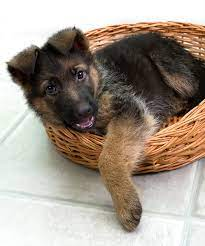
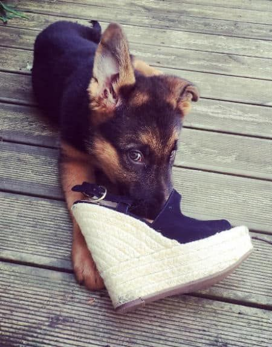

My pet's name is Roman. He is a three month old GSD whom I adopted from KSPCA. He is very playful but wary of strangers.
Roman's favorite activities include;
Roman's favorite toy is my pair of crocs. He owns a ball but he doesn't quite get the concept of fetch. Ever since I fot Roman, he has managed to;
Here are some of my favorite photos of Roman
 Roman likes watching youtube for dogs. His favorite channel is Paul Dinning Wildlife